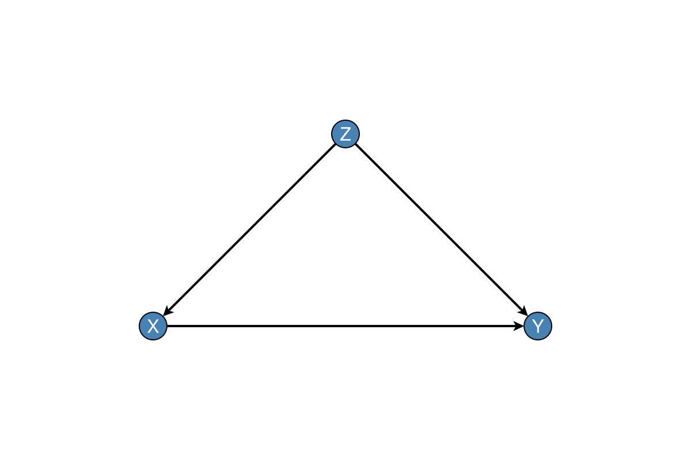

DAGMakie.jl
DAGMakie plots directed acyclic, directed cyclic, and mixed causal graphs with Makie, building on GraphMakie.jl. Defaults omit axes and grids; node types follow common causal-diagram conventions (observed, latent, treatment, outcome), with helpers for bidirected confounding, path highlighting, display-only do(·) surgery, and a visual grammar for interaction IDAGs and DiD SWIGs.
Capabilities
Layouts are deterministic for DAGs (layered) and SCC-aware for cyclic graphs. Undirected skeletons and time-indexed grids cover CPDAG output and unrolled temporal DAGs (Skeletons & Time). Themes (default, minimal, bold, presentation) control stroke weight and spacing. Convenience constructors cover chain, fork, collider, confounding, and mediation patterns. Path helpers accept adjustment sets directly, or load CausalInference / CausalDynamics when identification should be computed at plot time.
Installation
using Pkg
Pkg.add("DAGMakie")DAGMakie is on the Julia General registry. It is visualisation-only; identification and do(·) calculus stay in CausalInference.jl or CausalDynamics.jl.
Or for development:
Pkg.develop(url="https://github.com/SimonAB/DAGMakie.jl")Quick example
using DAGMakie, CairoMakie
# Confounding DAG Z → X → Y, Z → Y (triangle layout: confounder on top)
fig, ax, p = dagplot_confounding(["Z", "X", "Y"])
fig